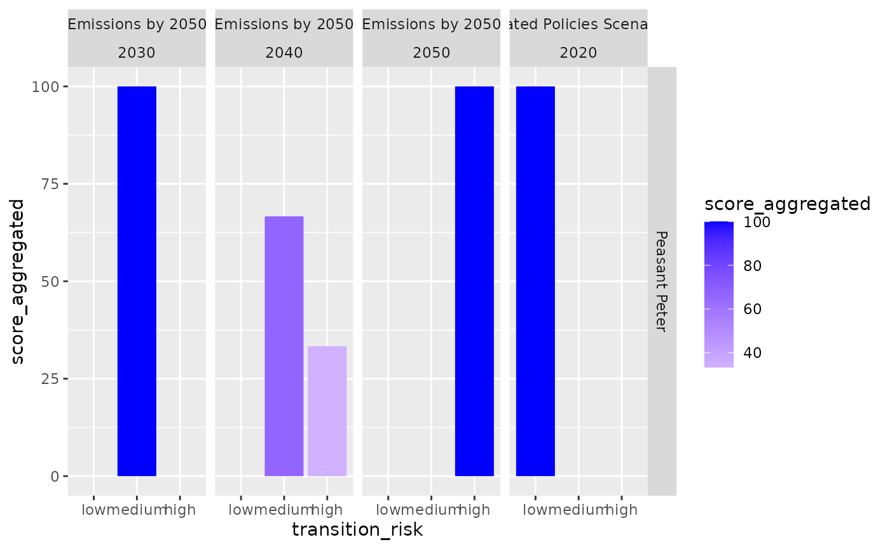

Product sector transition risk
Linda Delacombaz
product-sector-transition-risk.RmdData
- Demo companies toy data set that has the company name along with its products, sector and subsector information.
demo_companies <- tiltIndicator::companies
demo_companies
#> # A tibble: 10 × 5
#> company_id company_name products sector subsector
#> <dbl> <chr> <chr> <chr> <chr>
#> 1 1 Peasant Peter screws steel_metal_tr… bending_…
#> 2 2 Peasant Peter aluminium_alloy steel_metals aluminiu…
#> 3 3 Peasant Peter ultrafilstration cars vehicle_…
#> 4 4 Peasant Paul frozen_food frozen_food cheese_s…
#> 5 5 Tom's Car Company oils cars automobi…
#> 6 6 Tom's Car Company bolts steel_metal_tr… bending_…
#> 7 7 Screwdriver Expert chucks steel_metal_tr… boring_s…
#> 8 8 Screwdriver Expert adaptator_plate steel_metal_tr… boring_s…
#> 9 9 John Meier's Cars disinfection_products cars vehicle_…
#> 10 10 John Meier's Cars ultrafilstration cars vehicle_…- Mapper, which serves as a sector classification bridge between the Europages’ sectors and subsectors and the WEO 2022 file.
ep_weo_mapper <- tiltIndicator::ep_weo
summary(ep_weo_mapper)
#> EP_categories_id EP_group EP_sector EP_subsector
#> Length:133 Length:133 Length:133 Length:133
#> Class :character Class :character Class :character Class :character
#> Mode :character Mode :character Mode :character Mode :character
#> weo_product_mapper weo_flow_mapper
#> Length:133 Length:133
#> Class :character Class :character
#> Mode :character Mode :character- WEO file that contains the scenario, year, product and reductions information.
weo_2022 <- tiltIndicator::weo_2022
weo_2022
#> # A tibble: 8 × 10
#> publication scenario region category product flow unit year value
#> <chr> <chr> <chr> <chr> <chr> <chr> <chr> <dbl> <dbl>
#> 1 World Energy Outloo… Stated … world co2 com… Total Road… mt c… 2020 2.79e3
#> 2 World Energy Outloo… Net Zer… world co2 com… Total Road… mt c… 2030 1.63e3
#> 3 World Energy Outloo… Net Zer… world co2 com… Total Road… mt c… 2040 5.47e2
#> 4 World Energy Outloo… Net Zer… world co2 com… Total Road… mt c… 2050 8.46e1
#> 5 World Energy Outloo… Stated … world co2 com… Total Iron… mt c… 2020 2.59e3
#> 6 World Energy Outloo… Net Zer… world co2 com… Total Iron… mt c… 2030 1.95e2
#> 7 World Energy Outloo… Net Zer… world co2 com… Total Iron… mt c… 2040 1.01e4
#> 8 World Energy Outloo… Net Zer… world co2 com… Total Iron… mt c… 2050 7.43e3
#> # ℹ 1 more variable: reductions <dbl>Analysis
Introduction
The Product Sector Transition Risk Indicator measures the transition risk of products based on the sector’s emissions targets the product belongs to. Those sector emission reduction targets vary across scenarios (e.g., net zero scenario or 1.5° scenario) and the time horizon (e.g., reduction needed in 2030, 2040, 2050 to achieve the targets).
After assessing each product, all the products with the same category will be aggregated and set in relation to all products of the company. We, therefore, derive company-level information.
The goal of the transition risk MVP is to create a first draft of how the transition risk indicator would be build in code in order to convert it into code production easily in the future.
The transition risk indicator consists of 4 main steps:
- Step 1: Matching the products to the sectors
- Step 2: Identifying sector-specific emission reduction targets
- Step 3: Categorizing sector emission reduction targets into high, medium, and low product sector transition risk
- Step 4: Aggregating on the company-level
Step 1: Matching the products to the sectors
Each product of the company will be matched to a climate-relevant sector. For those that cannot be matched to one of the sectors, we classify them as ‘Other’.
Let us print the demo companies toy data set that has the company name along with its products, sector and subsector information.
demo_companies
#> # A tibble: 10 × 5
#> company_id company_name products sector subsector
#> <dbl> <chr> <chr> <chr> <chr>
#> 1 1 Peasant Peter screws steel_metal_tr… bending_…
#> 2 2 Peasant Peter aluminium_alloy steel_metals aluminiu…
#> 3 3 Peasant Peter ultrafilstration cars vehicle_…
#> 4 4 Peasant Paul frozen_food frozen_food cheese_s…
#> 5 5 Tom's Car Company oils cars automobi…
#> 6 6 Tom's Car Company bolts steel_metal_tr… bending_…
#> 7 7 Screwdriver Expert chucks steel_metal_tr… boring_s…
#> 8 8 Screwdriver Expert adaptator_plate steel_metal_tr… boring_s…
#> 9 9 John Meier's Cars disinfection_products cars vehicle_…
#> 10 10 John Meier's Cars ultrafilstration cars vehicle_…Let us print the mapper, which serves as a sector classification bridge between the Europages’ sectors and subsectors and the WEO 2022 file.
ep_weo_mapper
#> # A tibble: 133 × 6
#> EP_categories_id EP_group EP_sector EP_subsector weo_product_mapper
#> <chr> <chr> <chr> <chr> <chr>
#> 1 d3a7a3c40afd18a7a84094226… metallu… steel_me… bending_ste… Total
#> 2 8d926b734410de5ba68daa170… metallu… steel_me… boilers_sta… Total
#> 3 2eed5a1fd604b1d3ec561a072… metallu… steel_me… boring_stee… Total
#> 4 157f4f5953d1a5bfee4742175… metallu… steel_me… brazing_ste… Total
#> 5 2092de203e479b67bea023563… metallu… steel_me… broaching_s… Total
#> 6 62dea331c70a02280d5f71a27… metallu… steel_me… bronzing_st… Total
#> 7 8c02cdfddde68d166c1352fa7… metallu… steel_me… canopies_me… Total
#> 8 e593b1156ce341881d18b8274… metallu… steel_me… chrome_plat… Total
#> 9 b044eec1205c7ef2fde9e38db… metallu… steel_me… cleaning_st… Total
#> 10 0880f49af456479b3e4f99c1e… metallu… steel_me… cutting_ste… Total
#> # ℹ 123 more rows
#> # ℹ 1 more variable: weo_flow_mapper <chr>We join this on the sectors and subsectors columns.
joined_df <- demo_companies |>
left_join(ep_weo_mapper, by = c("sector" = "EP_sector", "subsector" = "EP_subsector"))
joined_df
#> # A tibble: 10 × 9
#> company_id company_name products sector subsector EP_categories_id EP_group
#> <dbl> <chr> <chr> <chr> <chr> <chr> <chr>
#> 1 1 Peasant Peter screws steel… bending_… d3a7a3c40afd18a… metallu…
#> 2 2 Peasant Peter alumini… steel… aluminiu… cff53720714f146… metallu…
#> 3 3 Peasant Peter ultrafi… cars vehicle_… 9518ae57fc6be29… vehicle…
#> 4 4 Peasant Paul frozen_… froze… cheese_s… NA NA
#> 5 5 Tom's Car Com… oils cars automobi… 0d63a8380d924eb… vehicle…
#> 6 6 Tom's Car Com… bolts steel… bending_… d3a7a3c40afd18a… metallu…
#> 7 7 Screwdriver E… chucks steel… boring_s… 2eed5a1fd604b1d… metallu…
#> 8 8 Screwdriver E… adaptat… steel… boring_s… 2eed5a1fd604b1d… metallu…
#> 9 9 John Meier's … disinfe… cars vehicle_… 9518ae57fc6be29… vehicle…
#> 10 10 John Meier's … ultrafi… cars vehicle_… 9518ae57fc6be29… vehicle…
#> # ℹ 2 more variables: weo_product_mapper <chr>, weo_flow_mapper <chr>Step 2: Identifying sector-specific emission reduction targets
Let us print the WEO file that contains the scenario, year, product and reductions information.
weo_2022
#> # A tibble: 8 × 10
#> publication scenario region category product flow unit year value
#> <chr> <chr> <chr> <chr> <chr> <chr> <chr> <dbl> <dbl>
#> 1 World Energy Outloo… Stated … world co2 com… Total Road… mt c… 2020 2.79e3
#> 2 World Energy Outloo… Net Zer… world co2 com… Total Road… mt c… 2030 1.63e3
#> 3 World Energy Outloo… Net Zer… world co2 com… Total Road… mt c… 2040 5.47e2
#> 4 World Energy Outloo… Net Zer… world co2 com… Total Road… mt c… 2050 8.46e1
#> 5 World Energy Outloo… Stated … world co2 com… Total Iron… mt c… 2020 2.59e3
#> 6 World Energy Outloo… Net Zer… world co2 com… Total Iron… mt c… 2030 1.95e2
#> 7 World Energy Outloo… Net Zer… world co2 com… Total Iron… mt c… 2040 1.01e4
#> 8 World Energy Outloo… Net Zer… world co2 com… Total Iron… mt c… 2050 7.43e3
#> # ℹ 1 more variable: reductions <dbl>Let’s join that again with our previously joined data frame:
final_df <- joined_df |>
left_join(weo_2022, by = c("weo_product_mapper" = "product", "weo_flow_mapper" = "flow"))
#> Warning in left_join(joined_df, weo_2022, by = c(weo_product_mapper = "product", : Detected an unexpected many-to-many relationship between `x` and `y`.
#> ℹ Row 1 of `x` matches multiple rows in `y`.
#> ℹ Row 5 of `y` matches multiple rows in `x`.
#> ℹ If a many-to-many relationship is expected, set `relationship =
#> "many-to-many"` to silence this warning.
final_df
#> # A tibble: 37 × 17
#> company_id company_name products sector subsector EP_categories_id EP_group
#> <dbl> <chr> <chr> <chr> <chr> <chr> <chr>
#> 1 1 Peasant Peter screws steel… bending_… d3a7a3c40afd18a… metallu…
#> 2 1 Peasant Peter screws steel… bending_… d3a7a3c40afd18a… metallu…
#> 3 1 Peasant Peter screws steel… bending_… d3a7a3c40afd18a… metallu…
#> 4 1 Peasant Peter screws steel… bending_… d3a7a3c40afd18a… metallu…
#> 5 2 Peasant Peter aluminiu… steel… aluminiu… cff53720714f146… metallu…
#> 6 2 Peasant Peter aluminiu… steel… aluminiu… cff53720714f146… metallu…
#> 7 2 Peasant Peter aluminiu… steel… aluminiu… cff53720714f146… metallu…
#> 8 2 Peasant Peter aluminiu… steel… aluminiu… cff53720714f146… metallu…
#> 9 3 Peasant Peter ultrafil… cars vehicle_… 9518ae57fc6be29… vehicle…
#> 10 3 Peasant Peter ultrafil… cars vehicle_… 9518ae57fc6be29… vehicle…
#> # ℹ 27 more rows
#> # ℹ 10 more variables: weo_product_mapper <chr>, weo_flow_mapper <chr>,
#> # publication <chr>, scenario <chr>, region <chr>, category <chr>,
#> # unit <chr>, year <dbl>, value <dbl>, reductions <dbl>
final_df |> write_csv("with_reductions.csv")Step 3: Categorizing sector emission reduction targets into high, medium, and low product sector transition risk
Let us categorize the transition risk into low, medium and high risk, based on the value of the reductions.
reductions ≤ 30% means low product sector transition risk.
30% < reductions ≤ 70% means medium product sector transition risk.
reductions > 70% means high product sector transition risk.
final_df_cat <- final_df |>
mutate(
transition_risk = case_when(
reductions <= 30 ~ "low",
reductions > 30 & reductions <= 70 ~ "medium",
reductions >= 70 ~ "high",
TRUE ~ "no_sector",
)
)
final_df_cat
#> # A tibble: 37 × 18
#> company_id company_name products sector subsector EP_categories_id EP_group
#> <dbl> <chr> <chr> <chr> <chr> <chr> <chr>
#> 1 1 Peasant Peter screws steel… bending_… d3a7a3c40afd18a… metallu…
#> 2 1 Peasant Peter screws steel… bending_… d3a7a3c40afd18a… metallu…
#> 3 1 Peasant Peter screws steel… bending_… d3a7a3c40afd18a… metallu…
#> 4 1 Peasant Peter screws steel… bending_… d3a7a3c40afd18a… metallu…
#> 5 2 Peasant Peter aluminiu… steel… aluminiu… cff53720714f146… metallu…
#> 6 2 Peasant Peter aluminiu… steel… aluminiu… cff53720714f146… metallu…
#> 7 2 Peasant Peter aluminiu… steel… aluminiu… cff53720714f146… metallu…
#> 8 2 Peasant Peter aluminiu… steel… aluminiu… cff53720714f146… metallu…
#> 9 3 Peasant Peter ultrafil… cars vehicle_… 9518ae57fc6be29… vehicle…
#> 10 3 Peasant Peter ultrafil… cars vehicle_… 9518ae57fc6be29… vehicle…
#> # ℹ 27 more rows
#> # ℹ 11 more variables: weo_product_mapper <chr>, weo_flow_mapper <chr>,
#> # publication <chr>, scenario <chr>, region <chr>, category <chr>,
#> # unit <chr>, year <dbl>, value <dbl>, reductions <dbl>,
#> # transition_risk <chr>
final_df_cat |> write_csv("with_transition_risk.csv")Step 4: Aggregating on the company-level
To derive a company-level indicator for a company that has more than one product in its portfolio, it is necessary to aggregate the Product sector transition Risk Indicator of each product into one indicator. The proposed method for that is to assume the same weights for each product.
Here are the calculation rules:
High Sector Transition Risk Products (in %) = ∑ of all high sector transition risk products / ∑ of all products
Medium Sector Transition Risk Products (in %) = ∑ of all medium sector transition risk products / ∑ of all products
Low Sector Transition Risk Products (in %) = ∑ of all low sector transition risk products / ∑ of all products
No Sector Transition Risk Products (in %) = ∑ of all no sector transition risk products / ∑ of all products
Here I calculate the numbers of products per companies in a new column, and join the data frame to have the data with the numbers of products that a company produces.
n_products_per_companies <- demo_companies |>
group_by(company_name) |>
summarise(total_products_per_company = n())
final_df_cat <- final_df_cat |>
left_join(n_products_per_companies, by = 'company_name')
final_df_cat
#> # A tibble: 37 × 19
#> company_id company_name products sector subsector EP_categories_id EP_group
#> <dbl> <chr> <chr> <chr> <chr> <chr> <chr>
#> 1 1 Peasant Peter screws steel… bending_… d3a7a3c40afd18a… metallu…
#> 2 1 Peasant Peter screws steel… bending_… d3a7a3c40afd18a… metallu…
#> 3 1 Peasant Peter screws steel… bending_… d3a7a3c40afd18a… metallu…
#> 4 1 Peasant Peter screws steel… bending_… d3a7a3c40afd18a… metallu…
#> 5 2 Peasant Peter aluminiu… steel… aluminiu… cff53720714f146… metallu…
#> 6 2 Peasant Peter aluminiu… steel… aluminiu… cff53720714f146… metallu…
#> 7 2 Peasant Peter aluminiu… steel… aluminiu… cff53720714f146… metallu…
#> 8 2 Peasant Peter aluminiu… steel… aluminiu… cff53720714f146… metallu…
#> 9 3 Peasant Peter ultrafil… cars vehicle_… 9518ae57fc6be29… vehicle…
#> 10 3 Peasant Peter ultrafil… cars vehicle_… 9518ae57fc6be29… vehicle…
#> # ℹ 27 more rows
#> # ℹ 12 more variables: weo_product_mapper <chr>, weo_flow_mapper <chr>,
#> # publication <chr>, scenario <chr>, region <chr>, category <chr>,
#> # unit <chr>, year <dbl>, value <dbl>, reductions <dbl>,
#> # transition_risk <chr>, total_products_per_company <int>Then, I calculate the score aggregated by summing (per transition risk) the products over the total numbers of products per company.
aggregated_score_df <- final_df_cat |>
select(company_id, company_name, transition_risk, total_products_per_company, scenario, year) |>
group_by(company_name, transition_risk, scenario, year) |>
summarise(score_aggregated = (n()/total_products_per_company*100), .groups = 'keep') |>
distinct_all()
#> Warning: Returning more (or less) than 1 row per `summarise()` group was deprecated in
#> dplyr 1.1.0.
#> ℹ Please use `reframe()` instead.
#> ℹ When switching from `summarise()` to `reframe()`, remember that `reframe()`
#> always returns an ungrouped data frame and adjust accordingly.
#> Call `lifecycle::last_lifecycle_warnings()` to see where this warning was
#> generated.
aggregated_score_df
#> # A tibble: 19 × 5
#> # Groups: company_name, transition_risk, scenario, year [19]
#> company_name transition_risk scenario year score_aggregated
#> <chr> <chr> <chr> <dbl> <dbl>
#> 1 John Meier's Cars high Net Zero Emissions… 2040 100
#> 2 John Meier's Cars high Net Zero Emissions… 2050 100
#> 3 John Meier's Cars low Stated Policies Sc… 2020 100
#> 4 John Meier's Cars medium Net Zero Emissions… 2030 100
#> 5 Peasant Paul no_sector NA NA 100
#> 6 Peasant Peter high Net Zero Emissions… 2040 33.3
#> 7 Peasant Peter high Net Zero Emissions… 2050 100
#> 8 Peasant Peter low Stated Policies Sc… 2020 100
#> 9 Peasant Peter medium Net Zero Emissions… 2030 100
#> 10 Peasant Peter medium Net Zero Emissions… 2040 66.7
#> 11 Screwdriver Expert high Net Zero Emissions… 2050 100
#> 12 Screwdriver Expert low Stated Policies Sc… 2020 100
#> 13 Screwdriver Expert medium Net Zero Emissions… 2030 100
#> 14 Screwdriver Expert medium Net Zero Emissions… 2040 100
#> 15 Tom's Car Company high Net Zero Emissions… 2040 50
#> 16 Tom's Car Company high Net Zero Emissions… 2050 100
#> 17 Tom's Car Company low Stated Policies Sc… 2020 100
#> 18 Tom's Car Company medium Net Zero Emissions… 2030 100
#> 19 Tom's Car Company medium Net Zero Emissions… 2040 50
aggregated_score_df |> write_csv("with_score_aggregated.csv")Step 5: Vizualisation example
Let us plot the result for the Peasant Peter company.
The score aggregated is the percentage of products of that company that are in either low, medium or high transition risk, relatively to a scenario and year that the user could chose, for example.
level_order <- c('low', 'medium', 'high')
aggregated_score_df |>
filter(company_name == "Peasant Peter") |>
ggplot(aes(x = transition_risk, y = score_aggregated, fill = score_aggregated)) +
scale_x_discrete(limits = level_order) +
geom_col() +
scale_fill_gradient2(midpoint = 0, low = "red", high = "blue") +
facet_grid(company_name ~ scenario+year)